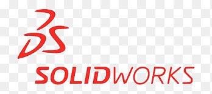
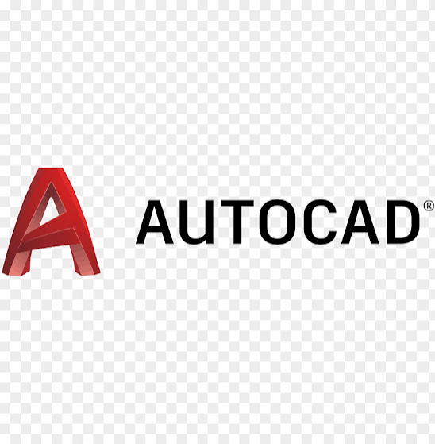
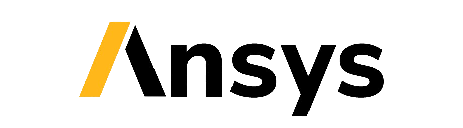
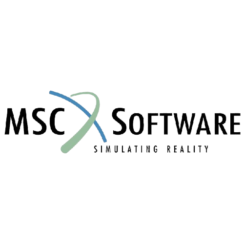
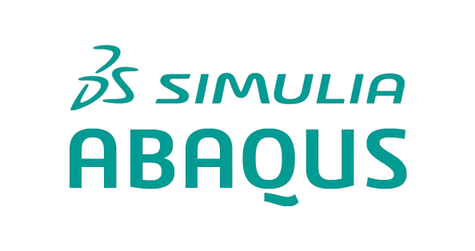

Hakkımda
KTO Karatay Üniversitesi Makine Mühendisliği bölümünden mezun oldum. Yapısal analiz, mekanik tasarım ve üretim süreçleri konularında derinleşmeyi hedefliyorum. Uzun dönem sanayi tecrübelerim boyunca, ürünün prototipten seri üretime kadar olan tüm süreçlerinde aktif rol aldım.
Mühendislik disiplininin yanı sıra çok yönlü gelişime inanıyorum. Düzenli olarak voleybol ve masa tenisi oynuyor, hobi olarak bağlama çalıyor ve aktif bir motosiklet kullanıcısı olarak seyahat arşivleri oluşturuyorum.
Teknik Yetkinlikler

ikonlar/SolidWorks 2024
AutoCAD
ANSYS
MSC ADAMS
Abaqus Python
Python
 MATLAB
MATLAB
Yabancı Dil: İngilizce (Orta Seviye - B1), aktif mesleki pratik.
Öne Çıkan Projeler
Motosikletlerde bakım maliyetini azaltmak amacıyla, zincir gerginliğini otomatik ayarlayan ve yağlama yapan elektromekanik bir sistemin tasarımı ve 3D modellenmesi.

Endüstriyel atık yönetimini sağlamak amacıyla bir solvent geri dönüşüm sisteminin proses tasarımı. Distilasyon kulesinin termodinamik hesaplamaları ve soğutma kanatçığı kullanılarak optimize edilmiş ısı eşanjörünün mekanik tasarımı.

Endüstriyel tip bir tavan vincinin ANSYS kullanılarak statik mukavemet, dinamik yük ve modal (titreşim) analizlerinin gerçekleştirilmesi; kritik gerilme bölgelerinin tespiti.

Yapılarda sismik yükler kaynaklı çökmeleri dengelemek ve rüzgar etkisiyle oluşan titreşimleri sönümlemek amacıyla mekanik bir dengeleme sisteminin tasarlanması.

İş ve Staj Deneyimi
- Elektronik kartlar (PCB) için mekanik koruma (subrack) ve ürün tasarımları geliştirme sürecinde görev aldım.
- Prototip ürün çalışmasından seri üretime kadar, giriş, üretim ve final kalite kontrolleri dahil tüm proseslerde aktif olarak yer aldım.
- Depo kurulumu ve laboratuvar proseslerinde cihaz kurulumundan işletilmesine kadar fiziki destek verdim.
- Taktik ekipman üretimi yapan firma için vakum termoform kalıbı tasarımı gerçekleştirdim.
- Ürünün teknik resimlerinin oluşturulması ve kalıplama sürecine uygunluğunu analiz edip, üretim sürecini takip ettim.
- Plastik enjeksiyon üretim süreçlerini ve kalıp bakım-onarım operasyonlarını yerinde inceledim.
- İmalat sonrası kalite kontrol testlerini yaparak, problemli çıkan ürünlerle ilgili kök neden analizi gerçekleştirdim.
İletişim & Bağlantılar
Projelerim, analiz detaylarım veya işbirlikleri hakkında benimle iletişime geçebilirsiniz.
E-posta: halilo.hz42@gmail.com
LinkedIn: linkedin.com/in/halil-öz